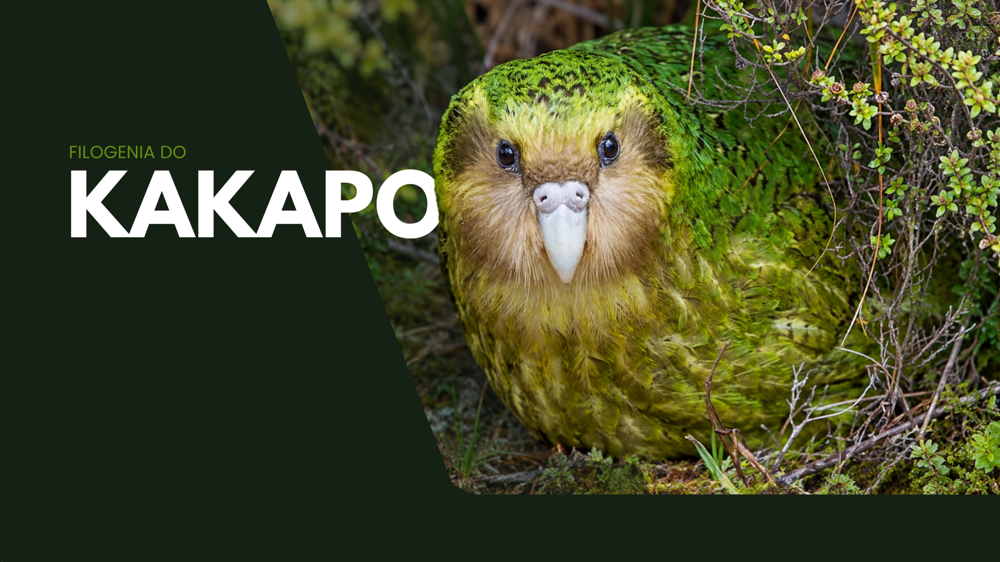

Kakapo
Kakapo
O Kakapo (Strigops Habroptilus) é o único membro vivo da família Strigopidae e é considerado o papagaio mais pesado do mundo, podendo pesar entre 2 e 4 kg. Endêmico da Nova Zelândia, evoluiu em um ambiente isolado e livre de mamíferos predadores terrestres, o que levou à perda da capacidade de voo, a hábitos noturnos e a uma vida predominantemente terrestre. Seu rosto possui um disco facial de penas que lembra o de uma coruja. Para mais detalhes sobre sua biologia, reprodução e conservação, acesse a página Kakapo no menu lateral.
Classificação Taxonômica
- Ordem: Psittaciformes (Papagaios, araras e cacatuas)
- Superfamília: Strigopoidea (Papagaios da Nova Zelândia)
- Família: Strigopidae
- Gênero: Strigops
- Espécie: Strigops Habroptilus
História Ancestral e Evolutiva
A linhagem do Kakapo representa uma das divergências mais antigas entre as aves modernas. O ancestral comum da superfamília Strigopoidea isolou-se geograficamente quando o fragmento de terra que hoje é a Nova Zelândia separou-se do antigo supercontinente de Gondwana, há aproximadamente 80 a 82 milhões de anos.
Estima-se que há cerca de 70 milhões de anos, a família Strigopidae (à qual o Kakapo pertence) divergiu de seus irmãos taxonômicos, os papagaios da família Nestoridae. Evoluindo em um ambiente insular isolado e completamente livre de mamíferos predadores terrestres, o Kakapo passou por drásticas adaptações fisiológicas: tornou-se noturno, extremamente pesado e perdeu a capacidade de voo, um clássico exemplo de evolução em ambientes insulares pacíficos.
Parentes Vivos Mais Próximos
O Kakapo é o único membro sobrevivente de sua família (Strigopidae). Seus parentes vivos mais próximos integram a família irmã taxonômica Nestoridae, que também é endêmica da Nova Zelândia. Ela é composta atualmente por apenas duas espécies:
- Kea (Nestor notabilis): O notório papagaio alpino habitante das montanhas da Ilha do Sul, conhecido por sua notável inteligência e comportamento curioso.
- Kākā (Nestor meridionalis): Papagaio florestal nativo que habita as florestas maduras de ambas as principais ilhas neozelandesas, possuindo hábitos mais tradicionalmente arborícolas.
Árvore Filogenética
O esquema abaixo resume a divergência dos Psittaciformes até o Kakapo. Clique em uma caixa para abrir a página correspondente.
-
Psittaciformes
-
Demais Psittaciformes
(Cacatuoidea e Psittacoidea) -
Strigopoidea
-
Nestoridae
(Kea e Kākā) - Strigopidae
-
Nestoridae
-
Demais Psittaciformes
Fontes
Wikipedia — New Zealand parrot
Wikipédia — Cacapo
Wikipédia — Strigopidae
Birds of the World — Strigops Habroptilus
WikiAves — Psittaciformes
Parrot Farm — Origem dos Psitacídeos
Britannica — Psittaciform: Evolution and Classification
Revista Uru — As aves e seus pés: classificação quanto à disposição de dedos
iNaturalist — Strigopidae
Nordic Society Oikos (Wiley) — The timing of diversification within the most divergent parrot clade
ResearchGate — The timing of diversification within the most divergent parrot clade
A-Z Animals — Kakapo